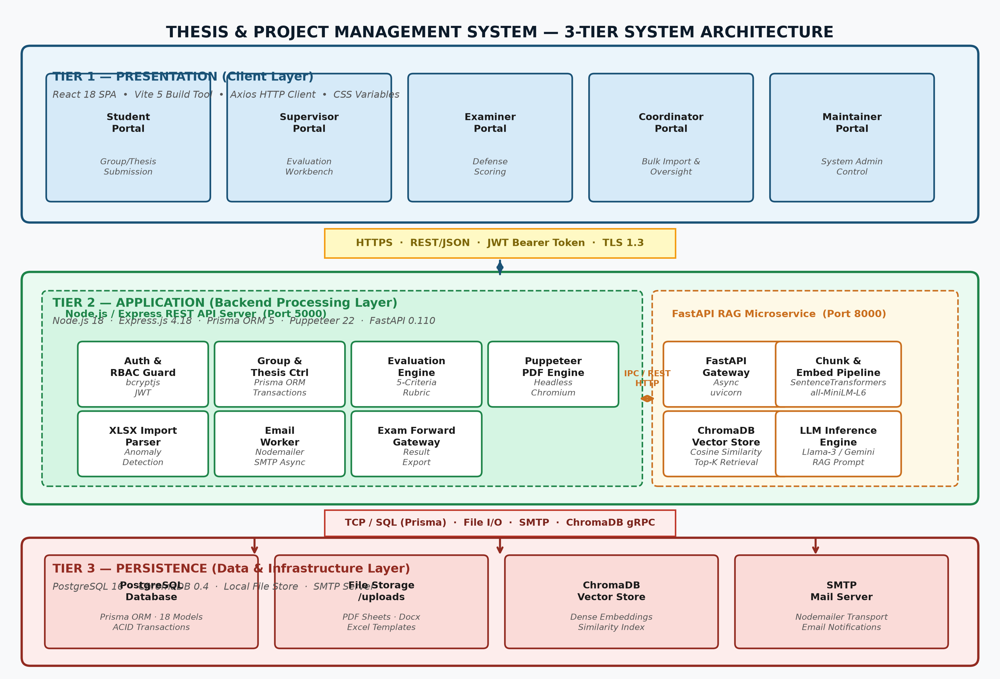
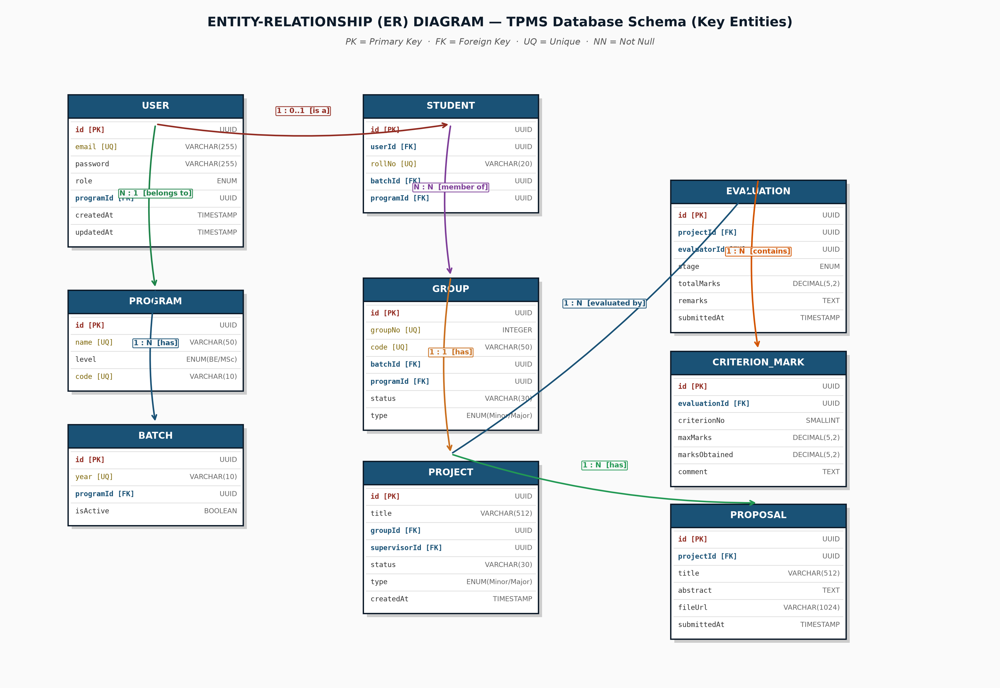
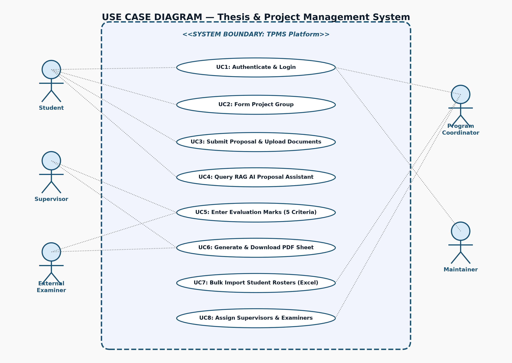
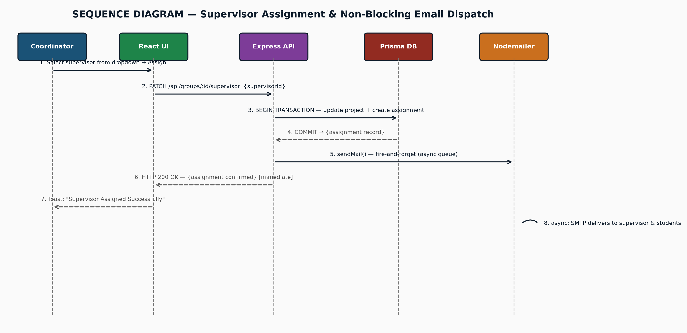
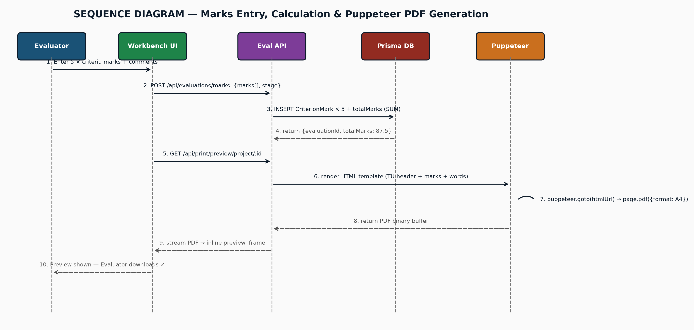

1. Presentation Strategy & Blueprint
Total Time: 12 Mins- Clarity of Domain & Problem: Does the team understand real DOECE departmental bottlenecks (email spam, fragmented spreadsheets, manual grading sheets, duplicate student enrollments)?
- Engineering Rigor & Architecture: Is the system scalable, secure, and properly modeled (ACID transactions, normalization, RBAC, decoupled AI microservice)?
- Implementation Completeness: Does the working system actually satisfy all Tribhuvan University academic rules and rubrics?
| Slide # | Slide Title / Content | Primary Speaker | Target Time | Key Emphases / Keywords to Mention |
|---|---|---|---|---|
| 01 | Title, Affiliation, Team & Supervisor | Prabesh BC | 30s | DOECE Pulchowk Campus, Minor Project (BCT VI Sem), TPMS |
| 02 | Problem Statement & Current Gaps | Prabesh BC | 1m 30s | Spreadsheet fragmentation, manual grade math, supervisor conflict of interest, lack of audit trail |
| 03 | Objectives & Functional Scope | Prabesh BC | 1m 30s | Multi-role faculty, 6 degree programs, automated rubrics (50/100/300 marks), PDF grade sheets |
| 04 | System Architecture & Tech Stack | Shreeyut Thapa | 2m 00s | 3-Tier Architecture, React 18, Express REST API, PostgreSQL + Prisma, Python FastAPI AI Microservice |
| 05 | Database Modeling & Constraints | Shreeyut Thapa | 2m 00s | 3NF normalization, foreign key cascades, unique compound indexes, Prisma transactions ($transaction) |
| 06 | Core Algorithms & Innovations | Subesh Yadav | 2m 00s | Fuzzy Levenshtein supervisor matching, Global Engagement Guard, Puppeteer PDF generator |
| 07 | AI Proposal Analysis Microservice | Subesh Yadav | 1m 30s | RAG Pipeline, PyMuPDF chunking, BAAI/bge-small embeddings, ChromaDB, Groq Llama-3.1-70B, SSE streaming |
| 08 | Testing, Results & Security | Prabesh BC | 1m 00s | Unit/Integration tests, RBAC guards, DegreeGuard middleware, bcrypt + JWT auth |
| 09 | Live Demonstration Transition | Subesh Yadav | — | Seamless transition to browser demo (Coordinator, Student, Supervisor, PDF) |
2. Word-for-Word Verbal Speaking Script
Memorize / Internalize[studentId, groupId] in GroupMember and [announcementId, studentId] in FormResponse eliminate double submissions.
- Referential integrity is protected via Cascading Deletes on dependent sub-entities (like evaluations and invitations) and SetNull on soft-linked supervisors.
- Every critical multi-table operation — such as converting a form submission into an active ProjectGroup with default rubric components — is wrapped in a Prisma Transaction (prisma.$transaction) guaranteeing ACID atomicity: either every relation succeeds or the entire transaction rolls back cleanly."
3. Zero-Fail Live Demonstration Runbook
Total Time: 6 MinsTab 1: Bachelor / Master Coordinator (Lead View) • Tab 2: Faculty Supervisor • Tab 3: Student Portal
msncs.coordinator@pcampus.edu.np (Password: subesh)What to Show:
- Navigate to Announcements → Click "View Responses" on "M.Sc. Research Thesis Topic Registration & Concept Note (Batch 2082)".
- Show the Live Metrics Bar: Chips showing
Eligible: 28 | Filled: 15 | Remaining: 13. - Click the blue "Select" button next to student Aarav Thakur (requested 'Dr. Prabesh Bhattarai') — show instant auto-matching to registered faculty.
- Show the warning badge on Prof. Andrew Ng (External Advisor alert).
- Click the PDF icon to open the attached proposal PDF in a new tab.
- Select multiple checkboxes and click "Finalize Selected" — show that they instantly convert into active database thesis records with auto-generated rubric components!
bct.coordinator@pcampus.edu.np (Password: subesh)What to Show:
- Navigate to Bachelor Projects → Filter by Minor (2080) to show active 3rd Year groups.
- Filter by Major (2078 Graduated) and open
BCT-078-Group1. - Show the comprehensive multi-evaluator scorecard:
- Supervisor Evaluation:
45.0 / 50 - Proposal Defense:
8.5 / 10 - Mid-Term Defense:
8.0 / 10 - Final Defense:
9.0 / 10 - Internal Examiner:
18.5 / 20 - Total Aggregated Grade: 89.0 / 100 (Pass with Distinction)
- Supervisor Evaluation:
- Click "Export Evaluation Sheet" → Puppeteer renders the official Pulchowk Campus grade sheet PDF with automated words conversion ('Eighty-Nine Point Zero').
- In the project detail view, open the Internal Examiner Assignment dropdown.
- Point out to the committee: "Notice that the project's assigned supervisor (e.g. Dr. Prabesh Bhattarai) is automatically excluded from this dropdown list, preventing accidental self-examination."
080bct001@pcampus.edu.np (Password: subesh)What to Show:
- Show the student dashboard: active announcement feed, group invitations, and project status badge.
- Show the Group Formation modal with live search, 4-member limit validation, and proposal document upload.
- Show that attempting to invite an already-engaged student shows a clear constraint validation alert.
prabesh.bhattarai@pcampus.edu.np (Password: subesh)What to Show:
- Navigate to Supervised Projects.
- Open an active group, enter criteria marks (Regularity, Methodology, Effort), type remarks, and submit live.
4. Default Presentation Credentials Reference
Password: subesh (ALL)| Role | Account Email | Account Name / Title | Key Demonstration Purpose |
|---|---|---|---|
| Master Coordinator | msncs.coordinator@pcampus.edu.np |
Dr. Anil Thapa | Matrix Responses, Fuzzy Supervisor Match, Batch Finalize |
| Bachelor Coordinator | bct.coordinator@pcampus.edu.np |
Ram Prasad | Minor & Major Groups, Multi-Stage Rubrics, Conflict Filter |
| Faculty Supervisor | prabesh.bhattarai@pcampus.edu.np |
Assoc. Prof. Dr. Prabesh Bhattarai | Live Criteria Grading, Feedback Comments |
| External Examiner | hari.adhikari@pcampus.edu.np |
Prof. Dr. Hari Adhikari | Independent External Defense Rubric Scoring |
| Bachelor Student (Minor) | 080bct001@pcampus.edu.np |
Aashish Khadka (Batch 2080) | Active Minor Group Formation, PDF Proposal Attachment |
| Master Student | subeshgaming@gmail.com |
Subesh (082MSNCS01) | Concept Registration Form, Unified Edit & PDF View |
| Maintainer / Admin | maintainer@pcampus.edu.np |
Subesh Gaming | Program-Scoped Audit Trail, Department User Directory |
5. Theoretical Foundations: Software Engineering & Architecture
Academic TheoryTPMS employs a classical 3-Tier Layered Architecture with a decoupled asynchronous microservice for machine learning workloads:
- Presentation Tier (Frontend Client): Single Page Application (SPA) executed on the client browser using React 18 and React Router v6. It maintains UI state, captures user interactions, and renders dynamic views without full-page reloads.
- Application / Business Logic Tier (Express REST Server): Node.js and Express.js REST API server handling request validation, authentication middleware, role-based authorization, data transformations, and transactional workflow governance.
- Data Tier (PostgreSQL Database + Prisma ORM): Relational database enforcing ACID properties, foreign key constraints, composite uniqueness, and optimized B-tree indexing.
- Auxiliary AI Microservice Tier (FastAPI + ChromaDB): An independent Python microservice specialized in computationally heavy NLP tasks (document chunking, embedding generation, vector distance queries).
The system was engineered following the Agile Scrum framework organized into two-week sprints. Each sprint involved backlog grooming, sprint planning, feature implementation, code review, automated testing, and sprint retrospectives. This methodology allowed rapid iterations based on feedback from DOECE faculty members and project coordinators.
Our API adheres to the 6 core architectural constraints formulated by Roy Fielding:
6. Theoretical Foundations: Database Design & ACID Integrity
Relational TheoryOur database schema of 18 tables is normalized to Third Normal Form (3NF) to eliminate data redundancy and insertion/update/deletion anomalies:
| Normal Form | Formal Definition | Implementation in TPMS Schema |
|---|---|---|
| First Normal Form (1NF) | Each column contains atomic (indivisible) values; no repeating groups or multivalued attributes. | Student lists in groups are not stored as comma-separated strings inside ProjectGroup; instead, an isolated associative entity GroupMember stores individual rows with single atomic studentId and groupId. |
| Second Normal Form (2NF) | Must be in 1NF and every non-key attribute is fully functionally dependent on the primary key (no partial dependencies on composite keys). | In composite tables like GroupMember (studentId, groupId), attributes like rollNumber belong directly to the student identity or relation, while all student biographical attributes (firstName, lastName, email) reside purely in the User table. |
| Third Normal Form (3NF) | Must be in 2NF and no non-key attribute is transitively dependent on the primary key (no X → Y → Z dependencies). | A project group references programId. Department details are not duplicated in ProjectGroup; instead, Program references departmentId, preventing transitive update anomalies when department details change. |
When a coordinator clicks "Finalize Selected" on the form responses matrix, multiple database mutations must execute as a single atomic unit:
// Example of ACID Transaction in backend/src/controllers/announcementController.js
await prisma.$transaction(async (tx) => {
// 1. Create or update ProjectGroup / Thesis record
const project = await tx.projectGroup.create({
data: { name, projectTitle, cluster, supervisorId, programId, status: 'ACTIVE' }
});
// 2. Insert group members into GroupMember table
await tx.groupMember.createMany({
data: memberStudentIds.map(sid => ({ groupId: project.id, studentId: sid, rollNumber: ... }))
});
// 3. Generate default evaluation rubric components (Supervisor, Defense, Examiner)
const defaultComponents = getDefaultComponents('MINOR');
await tx.evaluationComponent.createMany({
data: defaultComponents.map(c => ({ ...c, groupId: project.id, createdById: user.id }))
});
// 4. Update FormResponse status to FINALIZED
await tx.formResponse.updateMany({
where: { id: { in: responseIds } },
data: { status: 'FINALIZED', groupId: project.id }
});
});
ACID Breakdown:
• Atomicity: If step 3 fails (e.g., duplicate component constraint), steps 1, 2, and 4 are completely rolled back — no orphan project without rubric components can ever exist.
• Consistency: The database transitions only between valid states satisfying all check constraints and foreign key invariants.
• Isolation: Read Committed isolation prevents dirty reads from concurrent coordinator operations.
• Durability: Once the transaction commits, changes are persisted to PostgreSQL's Write-Ahead Log (WAL) on disk.
7. Theoretical Foundations: Authentication, Security & RBAC
Cybersecurity TheoryTPMS implements stateless authentication using JWT signed via HMAC-SHA256 (HS256):
Passwords are never stored in plaintext. They are hashed using bcrypt with an adaptive work factor (salt rounds = 10):
- Cryptographic Salt: A unique 128-bit random string generated per user that prevents Rainbow Table pre-computation attacks.
- Key Stretching (Eksblowfish algorithm): Iteratively hashes the input 2^10 = 1024 times, making brute-force and GPU dictionary attacks computationally infeasible.
| System Role | Program Scoping Boundary | Authorized Actions |
|---|---|---|
| MAINTAINER | Global Campus Scope (All Depts & Programs) | System administration, department/program configuration, full audit log inspection, user provisioning. |
| COORDINATOR (Bachelor) | Single Program (e.g. BCT or BEI only) | Publish announcements, finalize groups, assign supervisors/examiners, input defense marks, view program audit logs. |
| COORDINATOR (Master) | Cross-Program Master Level (MSCSK, MSICE, MSDSA, MSNCS) | Oversee Master 3rd Sem Projects & 4th Sem Theses, cross-program supervisor allocation, thesis defense scheduling. |
| SUPERVISOR | Assigned Projects / Theses Only | Submit supervisor rubric grades (25 marks Minor / 50 Major / 100 Thesis), download proposals, enter progress feedback. |
| EXTERNAL / INTERNAL EXAMINER | Assigned Peer Defense Projects Only | Submit independent defense scores (10 marks Minor / 20 Major / 200 Thesis) with supervisor conflict exclusion. |
| STUDENT | Own Enrolled Program & Group Only | Form groups, send/accept invitations, fill registration forms, attach proposal PDFs, review published evaluation sheets. |
8. Theoretical Foundations: AI Proposal Analysis & RAG Microservice
Machine Learning & NLPLarge Language Models suffer from context window constraints and hallucinations when evaluating domain-specific academic proposals. Our RAG Pipeline addresses this through a 5-stage pipeline:
BAAI/bge-small-en-v1.5 sentence transformer model, producing a dense 384-dimensional vector embedding capturing latent semantic meaning.Cosine Similarity = (A • B) / (||A|| * ||B||)
9. Technology Stack Deep Dive: What, Where & Why
Architectural Rationale| Technology | Where Used in TPMS | Why Chosen (Architectural Justification) | Alternative Rejected & Why |
|---|---|---|---|
| React 18 | Entire User Interface, Component Hierarchy, State Management | Declarative component model, Virtual DOM reconciliation (React Fiber), concurrency features, vast ecosystem for complex data grids. | Angular / Vue: React's unopinionated ecosystem allowed easy integration of custom design systems without heavy framework overhead. |
| Vite 5 | Build Tool & Development Server | Native ES-module Hot Module Replacement (HMR) offering instantaneous sub-second dev startup and Rollup-optimized production chunks. | Create React App (Webpack): Deprecated, bloated bundle size, slow initial build time (30s+ vs Vite 300ms). |
| React Router v6 | Client-Side Routing & Protected Route Guards (DegreeGuard) |
Nested layout routing, declarative route guards, programmatic navigation, URL parameter extraction. | Next.js: TPMS is an authenticated internal management portal, so Server-Side Rendering (SSR) SEO benefits were unnecessary compared to SPA agility. |
| Axios | HTTP API Client | Centralized request/response interceptors that automatically inject JWT bearer headers and handle global 401 token expirations. | Native fetch: Requires manual JSON parsing and lacks clean request/response interceptor hooks. |
| CSS Variables Design System | Custom DOECE Academic UI Styling | Zero runtime overhead, native dark/light theme switching, seamless responsiveness, lightweight compared to heavy UI kits. | Tailwind / Bootstrap: Custom CSS variables provided full design freedom without CSS class bloat or configuration lock-in. |
| Technology | Where Used in TPMS | Why Chosen (Architectural Justification) | Alternative Rejected & Why |
|---|---|---|---|
| Node.js & Express | Core REST API Server | Asynchronous non-blocking event-driven I/O model; high throughput for concurrent student form registrations and file uploads. | Django / Spring Boot: Node.js enables shared JavaScript/TypeScript knowledge across frontend and backend with minimal RAM usage. |
| PostgreSQL 16 | Primary Relational Database | Unmatched ACID compliance, rich constraint modeling, JSONB support for flexible form schemas, high-performance B-tree indexing. | MongoDB: Relational joins, strict foreign keys, and referential integrity are mandatory for academic grading and enrollment governance. |
| Prisma 5 ORM | Database Access Layer & Migrations | Type-safe query generation, intuitive schema definition (schema.prisma), automated migrations, built-in transaction safety. |
Sequelize / TypeORM: Fragile schema migrations, verbose query syntax, and weak compile-time type safety compared to Prisma. |
| Puppeteer | Official PDF Grade Sheet Generation (/api/print) |
Server-side headless Chromium rendering guarantees 100% pixel-perfect CSS A4 printing, precise headers/footers, and signature layouts. | jsPDF / html2pdf: Client-side canvas renderers produce fuzzy text, broken page boundaries, and inconsistent cross-browser outputs. |
| SheetJS (xlsx) | Bulk Excel Import & Export | Binary Excel workbook parsing, column normalization, cell type coercion, in-memory buffer generation for fast export. | Manual CSV parsing: Fails on complex multi-column Excel workbooks, UTF-8 character sets, and formulas. |
| Technology | Where Used in TPMS | Why Chosen (Architectural Justification) | Alternative Rejected & Why |
|---|---|---|---|
| Python 3.11 & FastAPI | AI Assistant Microservice | Async ASGI performance, automatic OpenAPI documentation, native interoperability with machine learning libraries (PyTorch, Transformers). | Running in Node.js: Node.js lacks mature native tensor libraries and sentence-transformer models. |
| PyMuPDF (fitz) | Proposal PDF Parsing | C-based high-speed text extraction (10x faster than PyPDF2/PDFMiner), robust handling of multi-column academic layouts. | PyPDF2: Frequently drops words, fails on complex layout columns, and slows down significantly on 20+ page PDFs. |
| ChromaDB | Vector Database | Lightweight, embedded vector store with native cosine distance querying and isolated collection partitioning per document. | Pinecone / Milvus: Pinecone is cloud-hosted and costly; Milvus is too heavy for local campus deployment. |
| Sentence-Transformers | Document & Query Embedding | Local execution of BAAI/bge-small-en-v1.5, producing compact 384-dimensional dense vectors with superior retrieval accuracy. |
OpenAI text-embedding-ada-002: High recurring API costs and latency; local models offer complete data privacy for university research. |
10. Core Engineering Algorithms & Implementations
Code & Logic
Students often enter supervisor preferences using typos, abbreviations, partial names, or omitted titles (e.g. 'suesh yadv' → 'Subesh Yadav' [83.3%], 'Dr. Prabesh' → 'Assoc. Prof. Dr. Prabesh Bhattarai' [100%]). Our algorithm combines Levenshtein Edit Distance with Honorific Prefix Stripping and Token Overlap:
// Location: backend/src/utils/fuzzyMatch.js
function levenshtein(a, b) {
const an = a.length, bn = b.length;
if (an === 0) return bn;
if (bn === 0) return an;
const matrix = Array.from({ length: bn + 1 }, (_, i) => [i]);
for (let j = 0; j <= an; j++) matrix[0][j] = j;
for (let i = 1; i <= bn; i++) {
for (let j = 1; j <= an; j++) {
if (b[i - 1] === a[j - 1]) matrix[i][j] = matrix[i - 1][j - 1];
else matrix[i][j] = Math.min(matrix[i - 1][j] + 1, matrix[i][j - 1] + 1, matrix[i - 1][j - 1] + 1);
}
}
return matrix[bn][an];
}
function levenshteinSimilarity(a, b) {
const maxLen = Math.max(a.length, b.length);
return maxLen === 0 ? 1.0 : (1 - levenshtein(a, b) / maxLen);
}
function fuzzyMatch(inputName, candidates, threshold = 0.4) {
if (!inputName || !inputName.trim()) return null;
const normalized = name => name.toLowerCase().trim()
.replace(/^(dr\.|er\.|prof\.|assoc\.\s*prof\.|mr\.|ms\.)\s*/i, '').replace(/\s+/g, ' ');
const rawInputNorm = inputName.toLowerCase().trim().replace(/\s+/g, ' ');
const input = normalized(inputName);
let bestMatch = null, bestScore = 0;
for (const c of candidates) {
const rawFullName = `${c.firstName} ${c.lastName}`.toLowerCase().trim().replace(/\s+/g, ' ');
const fullName = normalized(rawFullName);
// 1. Exact substring match = 1.0
if (rawFullName.includes(rawInputNorm) || rawInputNorm.includes(rawFullName) ||
fullName.includes(input) || input.includes(fullName)) {
return { user: c, score: 1.0, method: 'exact' };
}
// 2. Full-string Levenshtein similarity
const fullSim = Math.max(levenshteinSimilarity(rawInputNorm, rawFullName), levenshteinSimilarity(input, fullName));
// 3. Word-level token matching with Levenshtein typo tolerance
const inputWords = input.split(' ').filter(Boolean);
const nameWords = fullName.split(' ').filter(Boolean);
let tokenScoreSum = 0;
for (const iw of inputWords) {
let maxWordSim = 0;
for (const nw of nameWords) {
if (iw === nw) maxWordSim = 1.0;
else if (nw.includes(iw) || iw.includes(nw)) maxWordSim = Math.max(maxWordSim, 0.85);
else {
const sim = levenshteinSimilarity(iw, nw);
if (sim >= 0.55) maxWordSim = Math.max(maxWordSim, sim);
}
}
tokenScoreSum += maxWordSim;
}
const tokenScore = inputWords.length > 0 ? tokenScoreSum / Math.max(inputWords.length, nameWords.length) : 0;
const candidateScore = Math.max(fullSim, tokenScore);
if (candidateScore > bestScore) {
bestScore = candidateScore;
bestMatch = c;
}
}
return bestScore >= threshold ? { user: bestMatch, score: parseFloat(bestScore.toFixed(3)), method: 'fuzzy' } : null;
}To enforce the academic constraint that no student can be enrolled in multiple active project groups or theses at the same time:
// Transactional guard inside group creation & invitation acceptance
async function assertStudentNotEngaged(studentId) {
// Check active Bachelor project groups
const activeGroupMember = await prisma.groupMember.findFirst({
where: {
studentId: studentId,
group: { status: { in: ['ACTIVE', 'PENDING'] } }
},
include: { group: true }
});
if (activeGroupMember) {
throw new Error(`Student is already actively engaged in group: ${activeGroupMember.group.name}`);
}
// Check active Master theses
const activeThesis = await prisma.thesis.findFirst({
where: {
studentId: studentId,
status: { in: ['ACTIVE', 'PENDING'] }
}
});
if (activeThesis) {
throw new Error(`Student is already actively enrolled in thesis: ${activeThesis.title}`);
}
}Official IOE grade sheets require strict paper layout formatting and conversion of numeric marks into formal English words:
// backend/src/controllers/printController.js
// Number to words converter for academic marksheets (e.g. 45.5 -> 'Forty-Five Point Five')
function numberToWords(num) {
const units = ['', 'One', 'Two', 'Three', 'Four', 'Five', 'Six', 'Seven', 'Eight', 'Nine'];
const teens = ['Ten', 'Eleven', 'Twelve', 'Thirteen', 'Fourteen', 'Fifteen', 'Sixteen', 'Seventeen', 'Eighteen', 'Nineteen'];
const tens = ['', '', 'Twenty', 'Thirty', 'Forty', 'Fifty', 'Sixty', 'Seventy', 'Eighty', 'Ninety'];
if (num === 0) return 'Zero';
// Handles integer and decimal fractions
const [intPart, decPart] = num.toString().split('.');
let words = convertInteger(parseInt(intPart, 10));
if (decPart) {
words += ' Point ' + decPart.split('').map(d => units[parseInt(d, 10)]).join(' ');
}
return words;
}11. Viva Defense Master Q&A & Edge-Case Compendium
46 Categorized High-Scoring Questions1. Point: Give a clear, direct, high-level answer in the first 5 seconds.
2. Reason: State the underlying software engineering / academic principle.
3. Example: Cite the exact file, controller, or algorithm in this codebase (e.g.
backend/src/utils/fuzzyMatch.js or prisma.$transaction).
4. Point: Conclude with the business impact (e.g. "This eliminates grading errors and guarantees 100% data integrity").
📁 Domain 1: Project Scope, Motivation & Academic Rules
Key Gaps in Generic Tools vs TPMS:
1. No Multi-Project Engagement Guard: Google Forms allows students to register across multiple groups simultaneously, requiring hours of manual coordinator cross-checking. TPMS blocks this at the database constraint level.
2. No Conflict-of-Interest Enforcement: In Moodle, a teacher supervising a student can be accidentally assigned as their defense examiner. TPMS dynamically filters out assigned supervisors.
3. No Official IOE Grade Sheet Printing: Generic forms output raw CSVs. TPMS uses server-side Puppeteer to automatically generate official, signed, number-to-words formatted Pulchowk Campus A4 grade sheets.
4. Scattered Lifecycle: Forms, proposal PDFs, supervisor approvals, and defense rubrics (50/100/300 marks) reside in isolated spreadsheets rather than a unified ACID relational workflow.
Code Reference: Defined across
backend/src/config/evaluationScheme.js and backend/src/utils/coordinatorScope.js.
backend/src/config/evaluationScheme.js:
• Minor Project (BCT/BEI 6th Sem — Total: 50 Marks):
- Supervisor Evaluation: 25 Marks (Regularity, effort, implementation)
- Proposal Defense: 5 Marks (Coordinator/Department panel)
- Mid-Term Defense: 5 Marks (Coordinator/Department panel)
- Final Defense: 5 Marks (Coordinator/Department panel)
- Internal Examiner: 10 Marks (Peer faculty member, non-supervisor)
• Major Project (BCT/BEI 8th Sem — Total: 100 Marks):
- Supervisor: 50 Marks | Proposal: 10 Marks | Midterm: 10 Marks | Final: 10 Marks | Internal Examiner: 20 Marks
• Master Thesis (MSCSK/MSICE/MSDSA/MSNCS 4th Sem — Total: 300 Marks):
- Supervisor: 100 Marks (5 criteria × 20 marks)
- External Examiner (Mid-Term): 100 Marks (8 criteria covering Literature Review & Problem Formulation)
- External Examiner (Final): 100 Marks (5 criteria × 20 marks covering Defense, Research Quality & Report Writing)
Technical Mechanics:
1. Bachelor Programs (BCT, BEI): Strictly program-isolated. The BCT coordinator’s token query scope is bound to
programId = BCT. They cannot view, edit, or grade BEI or Master students.
2. Master Programs (MSCSK, MSICE, MSDSA, MSNCS): Governed with department-level cross-program oversight, allowing Master faculty to supervise and examine across allied specializations.
3. Multi-Role Faculty: A single user (e.g.
prabesh.bhattarai@pcampus.edu.np) has canSupervise: true and can simultaneously act as Supervisor for Group A, Internal Examiner for Group B, and Coordinator for Program C without logging in with multiple accounts.
Code Reference:
backend/src/utils/coordinatorScope.js function resolveCoordinatorScope() and frontend/src/components/DegreeGuard.jsx.
🏗️ Domain 2: System Architecture & Design Patterns
Architectural Rationale:
1. Separation of Concerns: The React 18 SPA handles rich client-side state (interactive matrix spreadsheets, real-time filters), while Express focuses strictly on business rules and database transactions.
2. Microservice Extensibility: By exposing a standard REST API, we easily integrated our separate Python FastAPI machine learning microservice without polluting our Node.js runtime.
3. Client Flexibility: The Express REST backend can seamlessly power future mobile applications (Android/iOS) for supervisors without altering backend code.
Technical Comparison:
• PDF Parsing: PyMuPDF (C-based fitz bindings) extracts clean text in <50ms, whereas Node.js PDF packages (
pdf-parse) frequently mangle multi-column academic text.
• Vector Embeddings: Python runs
sentence-transformers (BAAI/bge-small-en-v1.5) with native PyTorch C++ acceleration. Running ONNX in Node.js consumes excessive process RAM and lacks fine-tuning support.
• Process Isolation: Heavy vector embeddings and LLM streaming run in an isolated ASGI process on port 8001. Even during a 100-page thesis embedding job, the Express API (port 5000) remains 100% responsive for student logins.
Implementation in TPMS:
1. When a user logs in, the server signs a cryptographically verified JSON Web Token (JWT) containing
{ id, role, departmentId }.
2. On subsequent requests, the client sends this token via the
Authorization: Bearer <token> header.
3. The
authenticate middleware (in backend/src/middleware/auth.js) verifies the cryptographic signature with process.env.JWT_SECRET and extracts user identity.
4. Benefit: The backend can be horizontally scaled across multiple PM2 worker clusters or Docker containers without sticky sessions or shared Redis session memory.
🗄️ Domain 3: Database Design, ACID & Normalization
Mathematical Proof & Functional Dependencies:
• In
ProjectGroup, attributes are functionally dependent on the primary key $\text{groupId}$.
• Instead of storing
departmentName or departmentCode inside ProjectGroup (which would create a transitive dependency: $\text{groupId} \rightarrow \text{programId} \rightarrow \text{departmentId} \rightarrow \text{departmentName}$), ProjectGroup holds only programId.
•
Program references departmentId, and Department holds departmentName.
• This satisfies the 3NF condition: for every functional dependency $X \rightarrow Y$, either $X$ is a superkey or $Y$ is a prime attribute.
prisma.$transaction).
ACID Guarantees:
• Atomicity: If the database crashes or an error occurs on group #7, PostgreSQL executes a rollback on the Write-Ahead Log (WAL), reverting groups #1 through #6 back to their unfinalized state.
• Consistency: Foreign key constraints, default evaluation rubric components, and unique student roll numbers are strictly maintained.
Code Reference:
backend/src/controllers/announcementController.js inside finalizeBatch().
Key Technical Comparison:
1. Foreign Key Constraints: PostgreSQL prevents orphan grades (e.g. an evaluation cannot exist without a valid component and group). In MongoDB, deleting a user would leave dangling ObjectIds across unindexed collections.
2. Multi-Table ACID Transactions: PostgreSQL transactions ensure atomicity when creating a ProjectGroup, inserting 4 GroupMembers, and creating 5 EvaluationComponents in one step.
3. Hybrid Flexibility: PostgreSQL supports native
JSONB columns (used in our FormResponse.formData), giving us the schema flexibility of MongoDB alongside the relational power of SQL.
backend/prisma/schema.prisma:
•
@@index([status]) on ProjectGroup & Thesis (Speeds up status filtering for active vs graduated projects).
•
@@index([programId]) & @@index([departmentId]) (Crucial for sub-millisecond program-scoped coordinator queries).
•
@@index([role]) on User (Accelerates supervisor and examiner list lookups).
•
@@unique([studentId, groupId]) on GroupMember (Guarantees zero duplicate enrollments).
•
@@unique([announcementId, studentId]) on FormResponse (Eliminates duplicate form submissions).
Performance Impact: Reduces query lookup time complexity from $O(N)$ full table scans to $O(\log N)$ logarithmic tree lookups.
🔐 Domain 4: Security, Authentication & Role-Based Access Control
Implementation Steps:
1. Dropdown Exclusion: In
backend/src/controllers/examinerAssignmentController.js, when fetching candidate examiners for a project, the query explicitly filters:
where: { id: { not: project.supervisorId }, canSupervise: true }.
2. Submission Rejection: In
backend/src/controllers/evaluationController.js, when an examiner evaluation is submitted, the backend verifies:
if (req.user.id === project.supervisorId) return res.status(403).json({ error: 'Conflict of Interest: Assigned supervisor cannot submit examiner grades' });.
Security Controls:
• Bcrypt Salt: 128-bit cryptographically random salt generated per password prevents precomputed Rainbow Table attacks.
• Validation Enforcement:
userController.js (createUser, updateUser, bulkCreateUsers, bulkUploadUsers) and authController.js (resetPassword, changePassword) strictly reject passwords with length < 6 with HTTP 400.
• Rate Limiting:
express-rate-limit limits login attempts to 20 per 15 minutes, preventing brute-force dictionary attacks.
• Token Expiry & Sanitization: JWT tokens expire in 7 days, and user passwords are stripped from JSON responses using
const { password: _, ...userData } = user;.
1. SQL Injection Defense: We use Prisma ORM, which uses parameterized queries exclusively. User input is never concatenated into raw SQL strings; instead, values are passed as typed parameters, neutralizing SQL injection vectors.
2. XSS Defense: React 18 automatically escapes all JSX expressions before rendering them to the DOM, neutralizing malicious
<script> payloads. On the server, Helmet sets secure HTTP headers (X-Content-Type-Options: nosniff, X-Frame-Options: SAMEORIGIN).
3. File Upload Defense: Multer enforces memory/file size limits (10MB) and validates file extensions/MIME types to prevent executable scripts (.php, .exe) from being stored.
⚛️ Domain 5: Frontend Architecture & React 18 Mechanics
Why It Matters for TPMS:
Instead of re-rendering the entire 100-row table on the browser DOM (which causes lag and layout thrashing), React identifies the exact modified table cells or badge components and batches minimal DOM updates, maintaining a smooth 60 FPS user experience.
AuthContext, ToastContext) provides clean, centralized state management without the boilerplate, action creators, reducers, and bundle overhead of Redux.
State Architecture:
• Global State (Context API): Auth token, authenticated user profile, active degree program, and toast alert queue.
• Server State (Direct Axios API): Project groups, theses, and matrix responses are fetched on-demand per page with local component state (
useState, useEffect), ensuring fresh database synchronization without stale client store caches.
⚙️ Domain 6: Backend Engineering, Node.js & Print Automation
Concurrency Workflow:
1. When a student uploads a 10MB proposal PDF or an examiner submits grades, the HTTP request is accepted on the main event loop thread.
2. Synchronous CPU-bound tasks (e.g. bcrypt hashing) and asynchronous I/O operations (PostgreSQL queries, file system writes via Multer) are offloaded to libuv background worker threads.
3. The main thread immediately resumes processing new incoming coordinator or student requests.
4. When PostgreSQL returns data, libuv pushes the callback to the Event Loop Queue, executing the response handler without blocking the server.
jsPDF, html2canvas) render HTML into raster images or approximate canvas vectors, resulting in blurry text, broken page margins, and inconsistent results across mobile and desktop browsers.
Puppeteer Advantages in TPMS:
1. Pixel-Perfect DOM Execution: Puppeteer spins up a headless Chromium instance that interprets full CSS Paged Media standards (
@page { size: A4 portrait; margin: 15mm; }).
2. Automated Mark Conversion: Runs our algorithmic
numberToWords() function to render formal text marks (e.g. 45.0 $\rightarrow$ 'Forty-Five Point Zero').
3. Tamper-Proof Official Records: Grade sheets are generated directly from database state on the server, signed with institutional headers and signatures, preventing client-side DOM tampering before printing.
Code Reference:
backend/src/controllers/printController.js.
🧠 Domain 7: AI Assistant, RAG & Vector Embeddings
1. Text Extraction:
PyMuPDF (fitz) extracts raw text from student proposal PDFs, strips recurring running headers/footers, and normalizes whitespaces.
2. Sliding-Window Chunking: Text is split into 500-character chunks with a 100-character overlap to preserve semantic continuity across paragraph boundaries.
3. Vector Embeddings: Each chunk is embedded using the
BAAI/bge-small-en-v1.5 model, producing 384-dimensional dense vectors.
4. ChromaDB Vector Search: When a user asks a question, the query is embedded and matched against proposal chunk vectors using Cosine Similarity:
$$\text{Cosine Similarity} = \frac{\mathbf{A} \cdot \mathbf{B}}{\|\mathbf{A}\| \|\mathbf{B}\|}$$
5. Augmented Generation: The top-$k$ relevant context passages are injected into a structured system prompt evaluated by Llama-3.1-70B (via Groq Cloud), streaming tokens back to the frontend via Server-Sent Events (SSE).
Code Reference:
ai_chatbot/core/pipeline.py and ai_chatbot/core/chat_agent.py.
Fault-Tolerant Microservice Design:
• The Express backend triggers the AI analysis pipeline using an asynchronous fire-and-forget call (
setImmediate in uploadController.js).
• The HTTP response is returned to the student immediately without waiting for AI processing.
• If the AI service on port 8001 is unreachable, the backend catches the error, logs a warning, and leaves the proposal status as uploaded.
• All core grading, defense evaluations, announcements, and PDF printing functions remain 100% operational.
🛡️ Domain 8: Edge Cases, Concurrency & Trap Questions
Edge-Case Walkthrough:
1. Student C can receive invitations from both Group A and Group B.
2. When Student C clicks "Accept" on Group A's invite, the controller runs
assertStudentNotEngaged(studentId) inside a database transaction.
3. Student C is enrolled in Group A, and their state becomes
ACTIVE.
4. When Student C subsequently attempts to accept Group B's invite,
assertStudentNotEngaged detects their active enrollment in Group A, rejects the transaction with HTTP 400, and marks Group B's invitation as cancelled.
backend/src/controllers/userController.js and groupController.js) parses the workbook in memory and executes a 3-tier validation sweep before writing any row to the database:
1. Intra-File Duplicate Check: Flags rows sharing duplicate roll numbers within the same file.
2. Database Conflict Check: Queries existing users to flag students already registered in active groups.
3. Fuzzy Supervisor Resolution: Matches supervisor names using
fuzzyMatch.js; if confidence is below threshold (<0.4), the row is flagged with a warning rather than inserting corrupt records.
4. Atomic Result Report: Returns a structured preview:
{ validCount, errorCount, errors: [...] } for user confirmation.
Architectural Rationale:
Academic notifications (announcements, grading submissions, group invitations) are low-frequency events that do not require millisecond-latency gaming sockets. Standard REST with cache-controlled polling provides 99.9% resource efficiency with zero connection overhead.
For streaming AI tokens where low latency is critical, we used Server-Sent Events (SSE), which operates over standard HTTP without WebSocket handshake complexity.
1. Automated Defense Scheduling Engine: A genetic algorithm or constraint satisfaction solver (CSP) to automatically schedule 100+ project defense time slots, rooms, and examiner juries without room or faculty schedule collisions.
2. Plagiarism & Similarity Matrix Across Batches: Expanding the vector embedding pipeline to compute full cross-document similarity heatmaps against all past 10 years of archived Tribhuvan University theses.
3. Official Institutional Blockchain / Digital Signatures: Cryptographically signing exported evaluation PDFs with PKI x.509 digital certificates for instant verification by the TU Examination Control Division.
• Prabesh BC (54):
- Engineered the REST API routes and controllers for Bachelor project groups (
groupController.js) and multi-stage evaluation rubrics (evaluationController.js).
- Implemented Role-Based Access Control (RBAC), program-scoped audit logging (
auditService.js), and end-to-end integration testing.
• Shreeyut Thapa (80):
- Designed the PostgreSQL 3NF database schema and Prisma ORM migrations (
schema.prisma).
- Built the Frontend design system, responsive dashboards, and route guards (
DegreeGuard.jsx, PageLayout.jsx).
- Implemented the Master thesis lifecycle and coordinator cross-program assignment workflow (
thesisController.js).
• Subesh Yadav (84):
- Developed the Interactive Form Responses Matrix and Fuzzy Supervisor Matching Engine (
fuzzyMatch.js, announcementController.js).
- Built the server-side Puppeteer official PDF grade sheet printing engine (
printController.js).
- Architected and integrated the Python FastAPI AI microservice with PyMuPDF parsing, sentence-transformers embeddings, and ChromaDB vector search.
12. Real-World Departmental Scenarios & Operational Edge Cases
Departmental & Practical FocusReal-World Workflow:
1. The Coordinator opens the project details page and selects a new active faculty member from the supervisor dropdown.
2. Historical Data Preservation: All feedback comments, proposal milestone approvals, and previous remarks submitted by the departing supervisor are permanently preserved in the database (linked via
ProposalComment.authorId and AuditLog).
3. Handoff: The new supervisor immediately sees the project in their "Supervised Projects" dashboard and inherits the authority to submit final criteria evaluations (25 marks Minor / 50 marks Major / 100 marks Thesis).
4. Notification: The system sends an in-app notification to the student group informing them of their new supervisor.
Real-World Workflow:
1. In the project details view, the Coordinator can remove a member with 1 click.
2. Constraint Checks: The system ensures group size remains within bounds (1 to 4 students).
3. Engagement Lock Release: The removed student's record in
GroupMember is deleted, immediately clearing their active engagement status in the engagementGuard.
4. The freed student is now eligible to form a new group or accept an invitation from another group without database conflicts.
Real-World Workflow:
1. The group presents at the Proposal Defense. If the committee instructs them to change the title (e.g. from "Smart Traffic AI" to "YOLOv8 Real-Time Traffic Density Estimation for Kathmandu Corridors"), the Coordinator or Supervisor can update the title inline.
2. The student group re-uploads their revised Proposal PDF under the
PROPOSAL stage.
3. The new document replaces the active proposal link while generating a new audit entry, ensuring the official final marksheet prints the approved revised title.
minSize = 1, maxSize = 4).
Real-World Workflow:
• For Bachelor Minor/Major Projects, groups can range from 1 to 4 students. A solo student simply creates a group and skips sending invitations.
• For Master Theses, the system strictly enforces 1 student per thesis automatically.
• If late unassigned students remain, the Coordinator can use the "Unassigned Students" queue to merge them into existing groups before finalization.
@ioe.edu.np or external institutions with dedicated, sandboxed EXTERNAL_EXAMINER roles.
Real-World Workflow:
1. The Coordinator creates an External Examiner profile in Examiner Management (e.g.
Dr. Prajwal Ghimire, affiliation: IOE Central Campus / Industry).
2. When the external examiner logs in, their dashboard is restricted exclusively to their assigned peer defense groups.
3. They can review the student's proposal/report, enter independent rubric scores (e.g. 10 marks Minor / 20 marks Major / 200 marks Thesis), and submit grades with zero access to internal department records.
DRAFT and COMPLETED.
Real-World Workflow:
1. When supervisors and internal/external examiners input rubric scores, evaluations are saved in a protected evaluation store.
2. The student portal API explicitly filters out raw score numbers while the project is in progress, showing only status indicators (e.g. "Evaluation Submitted by Examiner").
3. Full consolidated scorecards and official PDF grade sheets are only unlocked for students after the Coordinator reviews all component totals and flags the results as officially finalized.
Real-World Workflow:
1. When reviewing new concept proposals in the Responses Matrix, Coordinators can search all archived projects from past batches (e.g. Batch 2078, 2079, 2080).
2. Every project is classified into specific research clusters (
AIML, IPCV, ANLP, NTS, EDMES, ACOM).
3. When a proposal PDF is uploaded, the AI microservice embeds the text into ChromaDB. Coordinators can run semantic similarity comparisons against past project vectors to immediately detect thematic repetition before approving the proposal.
Real-World Workflow:
• Standard Flow: Once the announcement deadline passes, the submission button on student portals is automatically disabled.
• Departmental Extension: If the department grants a general extension, the Coordinator edits the announcement's expiration date, instantly re-enabling submissions across the batch.
• Individual Case Override: If a specific student is granted a late submission by the HOD, the Coordinator can manually create the project group or thesis directly from the Coordinator management console.
Real-World Workflow:
1. When a project's final defense is completed and forwarded to the exam section, its status is set to
COMPLETED and forwardedToExamDept: true.
2. Evaluation submission endpoints reject any update requests on completed/forwarded projects with HTTP 403 Forbidden.
3. The archived records remain permanently searchable for historical reference, verification, and accreditation audits without risk of retroactive score tampering.
Real-World Workflow:
1. In the Responses Matrix, student supervisor preference names (e.g. 'Dr. Prabesh') are matched via
fuzzyMatch.js.
2. Next to each faculty candidate, the Coordinator sees current active project loads (e.g.
Assoc. Prof. Dr. Prabesh: 4 Groups vs Asst. Prof. Dr. Anita: 1 Group).
3. If a professor reaches departmental supervision caps, the Coordinator can override the allocation with a single click before final batch confirmation, ensuring equitable workload distribution across the department.
Real-World Workflow:
1. After all defense stages conclude, the Coordinator navigates to Evaluations and clicks "Bulk Export Evaluation Sheets".
2. Server-side Puppeteer generates a consolidated, page-separated PDF containing official Institute of Engineering marksheets with student rosters, criteria breakdowns, English words-converted marks, and signature blocks.
3. The Coordinator clicks "Forward to Exam Dept", which sets
forwardedToExamDept: true, records a timestamped audit trail, and marks the official administrative handover.
Real-World Workflow:
1. Every state mutation is logged in the PostgreSQL
AuditLog table.
2. The Coordinator navigates to Audit Logs and filters by the project ID.
3. The audit log displays the exact chronological record: who entered what mark, from which IP/session, at what exact timestamp (e.g.
SUPERVISOR ram@pcampus.edu.np updated Mid-Term score from 4.0 to 4.5 on 2026-08-20 14:32:10).
4. This provides indisputable forensic transparency to resolve any student grade dispute.
On-Premise Deployment Architecture:
• Core Web App: Node.js, Express, React, and PostgreSQL run natively on a campus server in the DOECE server room.
• AI Microservice: Uses local sentence-transformers (
BAAI/bge-small-en-v1.5) and local ChromaDB running on campus hardware without calling paid cloud embedding APIs.
• Network: Students and teachers connect via the Pulchowk Wi-Fi / Intranet subnet (e.g.
http://192.168.x.x:5000 or http://tpms.pcampus.edu.np), functioning even during internet outages.
Disaster Recovery Plan:
1. Database Backup: A nightly cron job runs
pg_dump -Fc thesis_management > /backups/tpms_$(date +%F).dump.
2. File Attachments: Uploaded proposals and generated PDFs in
backend/storage/ are synced daily to an offsite backup drive.
3. Restoration Time: In the event of a catastrophic server crash, the entire system can be restored on a replacement server in under 5 minutes using
pg_restore and Docker/Node startup scripts.
How It Works in This Codebase:
1. Synchronous DB Notification: The database record (
Notification table) is committed synchronously inside the database transaction (prisma.notification.create). When the student or supervisor logs in, their in-app bell notification is guaranteed to be there.
2. Non-Blocking Email Dispatch: In
backend/src/services/emailService.js, the SMTP call is wrapped in a dedicated try...catch block. If SMTP times out, rejects the socket, or throws an authentication error, it logs console.error('Email send failed:', error.message) and completes gracefully without crashing the Express HTTP request or aborting the database mutation.
• For Group Notifications (e.g. Supervisor Assigned, New Milestone):
emailService.js accepts an array of student emails and formats them as a single multi-recipient SMTP envelope (to: studentEmails.join(', ')). This minimizes network socket round-trips.
• For Batch Announcements (e.g. 50+ students): The controller iterates through recipient IDs, inserting in-app database notifications in bulk via
prisma.notification.createMany, and dispatches email notifications asynchronously.
• Invalid Email Handling: If one student has an invalid or defunct email, the SMTP server returns an individual
550 5.1.1 User unknown code. In our decoupled architecture, this bounce does not prevent other group members from receiving their notifications, nor does it corrupt the database state.
1. The Limitations of Raw SMTP:
• Synchronous Socket Blocking: If SMTP is called directly inside an Express route, network latency to external mail relays (e.g. Gmail SMTP, university mail relay) adds 1.5–3 seconds of latency to every HTTP response.
• Firewall & Port Blocking: Campus subnets often block outbound TCP ports 25, 465, and 587 to prevent rogue spam bots.
• Rate Limiting & Throttling: Sending 100 emails simultaneously during proposal registration triggers rate limits (e.g. Google Workspace 100 recipients/minute limit), causing subsequent emails to be dropped silently.
2. Production-Grade Solution (Future Improvement Proposal):
• Message Queue & Background Workers: Introduce Redis + BullMQ (or RabbitMQ). Instead of sending emails during the HTTP request, the API pushes an
email_job payload into a Redis queue and returns an instant HTTP 200 to the client in <15ms.
• Exponential Backoff & Retries: If the SMTP server is down, the background worker automatically retries with exponential backoff (e.g. retry after 10s, 1m, 5m, 15m).
• Dead-Letter Queue (DLQ): Emails that fail after 5 attempts are moved to a DLQ for administrator review rather than vanishing.
• Transactional HTTP APIs: Replace raw SMTP with RESTful transactional email services (e.g. AWS SES, Resend, or SendGrid) communicating over standard HTTPS port 443 with webhook delivery status callbacks.
Architectural Safeguard:
1. Every event (Supervisor Assigned, Examiner Assigned, Feedback Submitted, Form Registration Call, Milestone Deadline) is committed to the local PostgreSQL database table
Notification (id, userId, title, message, read, createdAt).
2. Because PostgreSQL runs on the local campus server, in-app notifications are 100% immune to internet outages, firewall blocks, SMTP downtime, or DNS failures.
3. Whenever a student or faculty member opens the application, the bell icon queries
GET /api/notifications directly from the database with live unread badge counters.
Defense Points:
1. API Rate Limiting:
express-rate-limit protects upload endpoints from brute-force automated hammering.
2. Notification Debouncing: When multiple group members edit a draft submission in quick succession, notifications to the supervisor are consolidated rather than sending an email for every keystroke.
3. Database Connection Pooling: Prisma Client manages a connection pool with backpressure protection, preventing database exhaustion during last-minute submission rushes.
1. WebSockets / SSE (Server-Sent Events): Replace client-side polling with real-time push notifications so defense marks and supervisor feedback appear instantly on student screens without page refresh.
2. SMS / Viber / WhatsApp Gateway Integration: For urgent deadline alerts (e.g. *"Final Defense starts in 30 minutes at Room 402"*), integrate with local Nepal telecom SMS gateways (e.g. Sparrow SMS) for high-urgency notifications.
3. Distributed Message Broker (BullMQ + Redis): Fully offload PDF generation and email dispatches to background worker clusters with automated retry policies.
13. Architectural Diagrams & Visual Models
System Models



